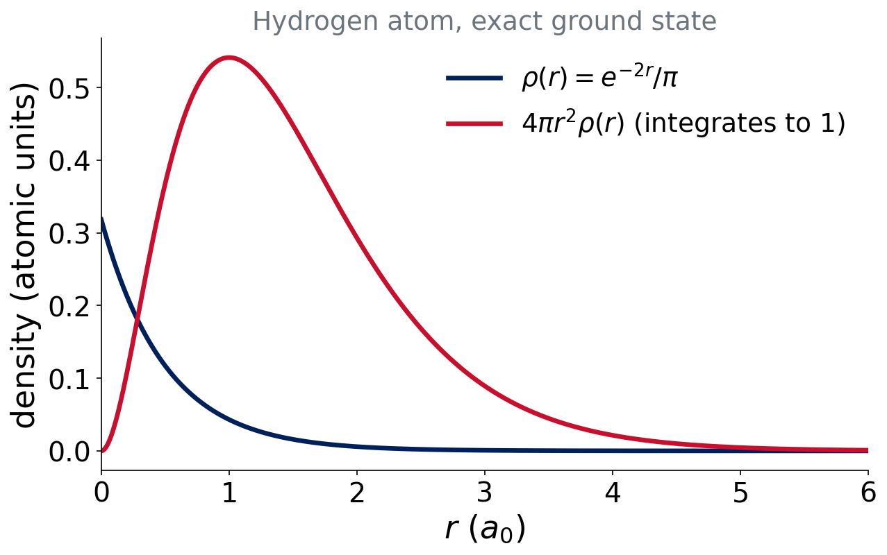
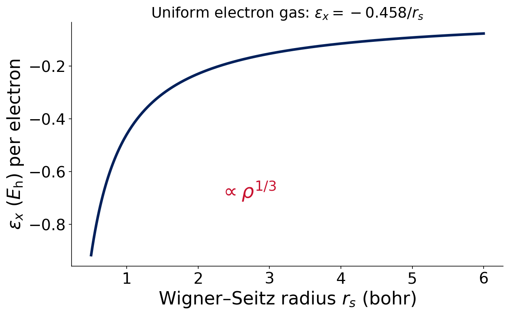

Lecture 5 · Approximating the Hamiltonian II
Density functional theory
Advanced Physical Chemistry · Florida Institute of Technology
Motivation
Wave function or density?
- Ψ depends on 3N spatial coordinates (plus spin)
- The density ρ(r) depends on 3
Correlated wave-function methods are accurate and expensive (\(N^5\) to \(N^7\)). Could the density be enough?
Think–pair–share
Question (2 min)
A molecule with 50 electrons. How many spatial variables does Ψ have? And ρ?
Ψ: \(3\times50=150\). ρ: 3, whatever the size.
The density
The electron density
\[ \rho(\mathbf r)=N\int|\Psi(\mathbf r,\mathbf r_2,\dots,\mathbf r_N)|^2\,d\mathbf r_2\cdots d\mathbf r_N\qquad\int\rho\,d\mathbf r=N \]
- Probability density of finding an electron at r
- An observable: measured by X-ray diffraction
Hydrogen atom density

Exact ground-state hydrogen. The density has a cusp at the nucleus and decays exponentially.
Hohenberg–Kohn theorems (1964)
- ρ(r) determines the external potential, and so Ĥ and everything
- There is a variational principle for \(E[\rho]\): \(E[\rho]\ge E_0\)
In principle, the density contains all the information of Ψ. But the theorem does not tell us the functional \(E[\rho]\).
Hohenberg & Kohn, Phys. Rev. 136, B864 (1964)
Thomas–Fermi: a cautionary tale
Write the kinetic energy directly as a functional of ρ (orbital-free DFT).
- Simple, fast, no orbitals
- But the result is poor: no chemical bonding at all
Lesson: the kinetic energy is too important to approximate crudely.
Kohn–Sham
The Kohn–Sham idea (1965)
Invent a fictitious system of non-interacting electrons with the same density.
- Orbitals are back: \(\rho(\mathbf r)=\sum_i|\phi_i(\mathbf r)|^2\)
- Compute most of the kinetic energy exactly from the orbitals
Kohn & Sham, Phys. Rev. 140, A1133 (1965)
The energy expression
\[ E[\rho]=T_s[\rho]+E_{ne}[\rho]+J[\rho]+E_{xc}[\rho] \]
- \(T_s\): kinetic energy of the non-interacting electrons
- \(E_{ne}\): attraction to nuclei; \(J\): classical Coulomb repulsion
- \(E_{xc}\): exchange–correlation
All the unknown physics is in \(E_{xc}\).
What is in E_xc?
\[ E_{xc}=\underbrace{\text{exchange}}_{\text{antisymmetry}}+\underbrace{\text{correlation}}_{\text{dodging}}+\underbrace{(T-T_s)}_{\text{kinetic correction}} \]
With the exact \(E_{xc}\), Kohn–Sham DFT is exact. Every functional is a different approximation to \(E_{xc}\).
The Kohn–Sham equations
\[ \Big[-\tfrac12\nabla^2+v_\text{eff}(\mathbf r)\Big]\phi_i=\varepsilon_i\,\phi_i \]
- Same form as HF: one-electron equations
- \(v_\text{eff}\) depends on ρ, so we iterate (the same SCF)
- That is why the output looks the same for HF and DFT
HF versus KS-DFT
| HF | Kohn–Sham DFT | |
|---|---|---|
| Unknowns | orbitals φᵢ | orbitals φᵢ |
| Exchange | exact | approximate, in \(E_{xc}\) |
| Correlation | none | approximate, in \(E_{xc}\) |
| Solved by | SCF | SCF |
| Exact in principle? | no | yes (exact \(E_{xc}\)) |
Think–pair–share
Question (2 min)
HF and DFT have a similar cost. Why can a DFT calculation give a lower or a higher energy than HF, with no variational guarantee against the exact energy?
The exact \(E_{xc}\) is unknown. An approximate functional is not variational with respect to the true energy: errors can go either way.
The first approximation: LSDA
The uniform electron gas

Pretend the density is locally uniform.
\[ \varepsilon_x\propto-\rho^{1/3} \]
\[ E_x^\text{LDA}=-C_x\int\rho^{4/3}\,d\mathbf r \]
Dirac 1930; Slater 1951. Wigner–Seitz radius: \(r_s=(3/4\pi\rho)^{1/3}\).
LSDA correlation
Correlation energy of the uniform gas, fitted to quantum Monte Carlo data (Ceperley & Alder):
- VWN: Vosko, Wilk & Nusair, Can. J. Phys. 1980
- PW92: Perdew & Wang, Phys. Rev. B 1992
Spin-dependent: LSDA (local spin-density approximation).
What does LSDA get right and wrong?
Right
- Geometries, surprisingly good
- Vibrational frequencies (reasonable)
Wrong
- Bonds too strong (overbinding)
- Atomization energies much too large
- Weak interactions unreliable
Think–pair–share
Question (2 min)
Real molecules have regions where the density changes rapidly (near nuclei, in bonds). Why is a “locally uniform gas” a poor model there? What ingredient would you add?
A uniform gas has zero gradient. Add information about how fast ρ changes: the gradient ∇ρ. That is the next rung (Lecture 6).
Practicalities and known errors
Numerical integration
\(E_{xc}\) has no analytic integral. It is evaluated on a grid of points around each atom.
- Accuracy and cost depend on the grid
- HF needs no such grid
Full story in Lecture 11.
Hybrid functionals: a preview
Mix a fraction of exact HF exchange into the functional.
- Reduces self-interaction error
- Costs more than pure functionals
- Next class
Known errors to keep in mind
- Self-interaction / delocalization error: an electron partly repels itself (HF has none)
- Missing long-range dispersion: semilocal functionals see only local density
- Static correlation: stretched bonds, near-degenerate states
Each returns in Lectures 8–9.
Summary
- Hohenberg–Kohn: ρ is enough, in principle
- Kohn–Sham: orbitals back, the same SCF, all the difficulty in \(E_{xc}\)
- LSDA: the first, simplest approximation to \(E_{xc}\)
Lecture 6: climbing Jacob’s ladder.
References
- Hohenberg & Kohn, Phys. Rev. 136, B864 (1964)
- Kohn & Sham, Phys. Rev. 140, A1133 (1965)
- Slater, Phys. Rev. 81, 385 (1951)
- Vosko, Wilk & Nusair, Can. J. Phys. 58, 1200 (1980)
- Perdew & Wang, Phys. Rev. B 45, 13244 (1992)

CHM 5111 · Advanced Physical Chemistry · Florida Institute of Technology